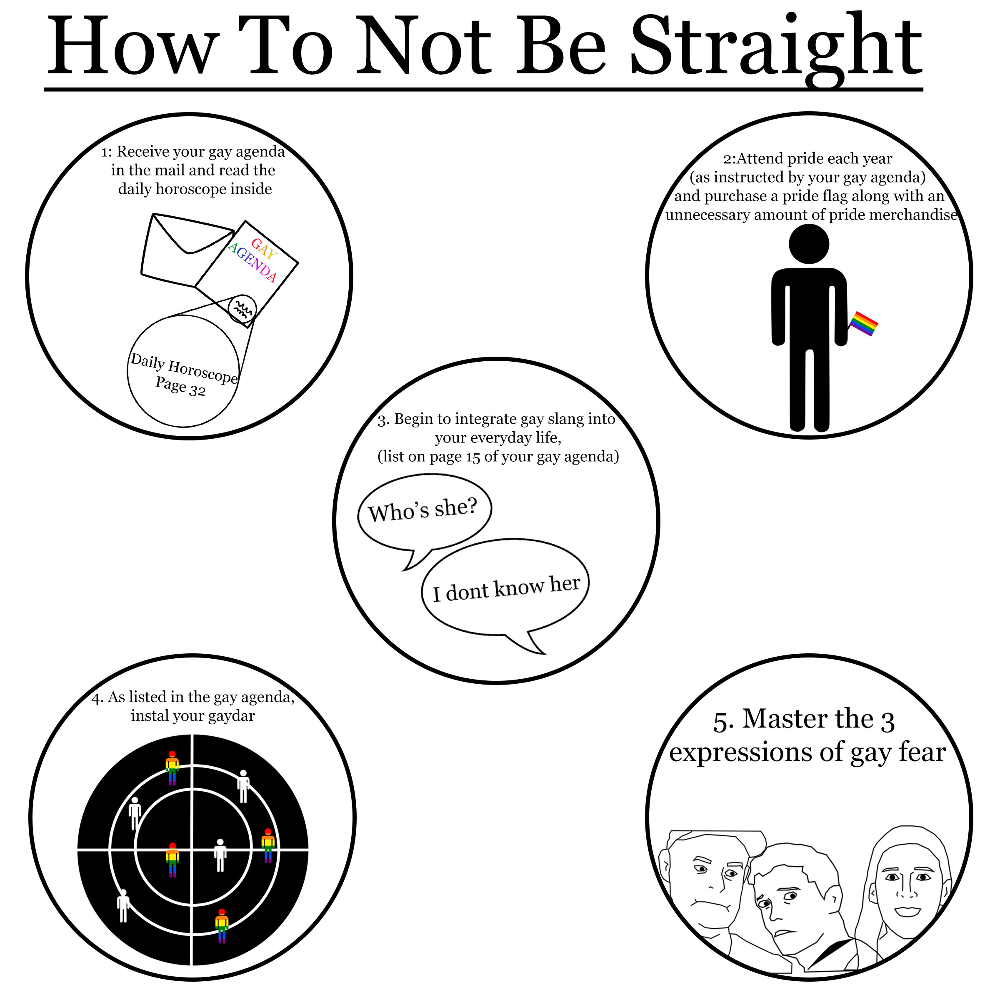

About Me
I am currently 17, and attend Eastern Highschool along with being an early college student through in the Eaton RESA program. I participate in theatre at school and keep a 4.02 GPA.
I spend my time writing, drawing, and editing photos for my instagram. I have strong opinions, like that pineapple doesnt belong on pizza and that LGBT+ rights are human rights.
Gallery
A portfolio of my Diital Media and Design classwork, 2018-2019.
Best Of: my favorite pieces that I created
102 2d Design: Pieces from the 102 design class where we covered design concepts like unity, balance, rhythm, Line, etc.
171 Photoshop: Pieces from the 171 Photoshop class where we learned how to use photoshop
-
This image is from a value assignment, where we had to use at least 3 images in black and white to create a book cover. I learned about how changing the lightness or darkness can change the feeling a piece gives off.
-

This poster is from our Youth for Service assignment, where we had to create a poster encouraging other teenagers to volunteer and help the community.
-
This assignment was to create a poster for the NAIAS poster contest, by adding in all the necessary text along with a visual either connected to cars or detroit (where the show was located)
-
This piece is from an assignment where we had to use the concepts of balance in design, specifically radial symmetry, to create a collage.
-

In this assignment I had to apply my knowledge of Line design concepts to create an instruction manual with step-by-step instructions for accomplishing a task.
-
This piece is from an assignment where we had to use the concepts of balance in design, specifically symmetry, to create a collage
-
This was our first assignment, where we just had to create something in photoshop. I then later decided to redo it in order to track my progress, and this became the final product.
-
In this assignment we had to create an image that represents things that bring us joy.
-
This poster was made for a design challenge where we had to make a travel poster to somewhere no one would want to go
Personal Work
This is work I have done that I am proud of, not in my class gallery.
Contact Me!
If you want, you dont have to.